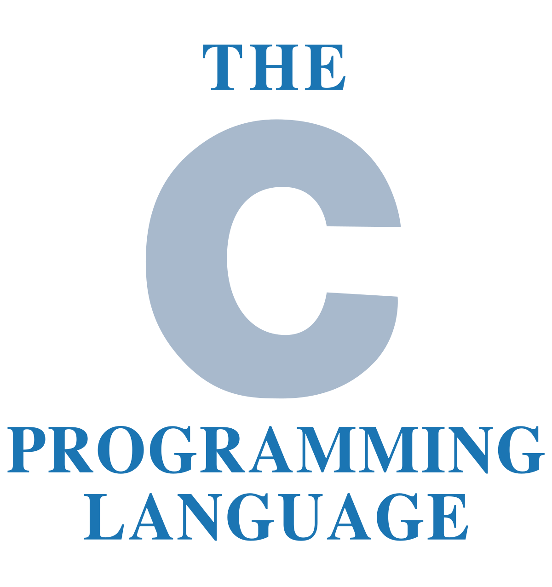

While programming embedded systems, there is a certain type of language you want to stick to.
If you were to use high level languages, like python, there would be several downsides.
1.) The optimization that happens in the background of these languages can cause unpredictable changes in the program.
2.) They are slow, which is a problem when the embedded system is in a high demand system.
3.) They take up alot of memory in comparison to low-level languages. [2]
There are several advantages to using low-level language like C, or even assembly:
1.) Little optimization in the background, leading to predictable code (deterministic behaviour).
2.) Low level languages typically run faster (better timing).
3.) Memory allocation is manual, so you can ensure your code is doing exactly what it's meant to do.

To start programming embedded systems, you can easily program arduinos or raspberry pi’s to gain experience in C. From there, you can easily look to build small scale robots to apply your learning.